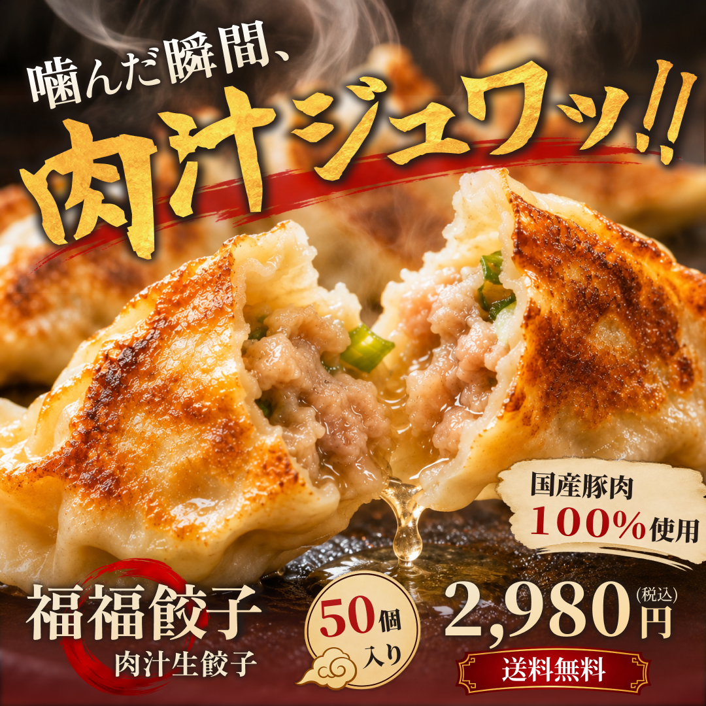

WORK

福福餃子 肉汁生餃子バナー
DESIGN
福福餃 肉汁生餃子 バナー(自主制作)
- 目的
- 餃子のジューシーさや食欲をそそる魅力を視覚的に伝え、ECサイトでの商品への興味・購入意欲を高めることを目的としました。
- ターゲット
- 自宅で手軽に本格的な餃子を楽しみたい方や、ボリューム感・おいしさを重視して食品を購入する方。
- 工夫した点
- 肉汁があふれる商品写真を大きく配置し、食欲を刺激する迫力のあるデザインを意識しました。
金箔風の筆文字と赤い筆の装飾でインパクトを出し、明朝体を組み合わせることで専門店らしい雰囲気を演出しました。
また、商品名・内容量・価格・送料無料などの情報を下部に整理し、商品の魅力と購入時に必要な情報が伝わる構成にしました。 - 制作期間
- 約２日間
- 使用言語・ツール
- Figma / ChatGPT（画像生成）